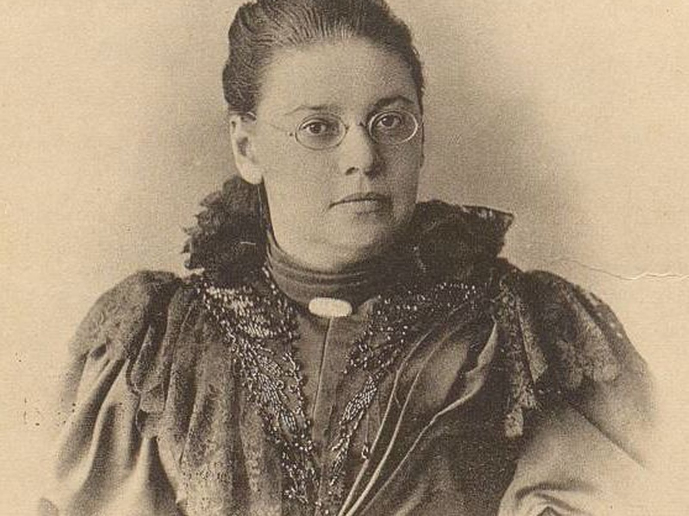

первый земский офтальмолог России Евгения Павловна Серебренникова родилась 10 декабря (22 декабря по старому стилю) 1854 года в Екатеринбурге в семье горного инженера. С детства она поражала окружающих незаурядными способностями: в семь лет свободно читала по-русски и по-французски, а в двенадцать поступила сразу в третий класс Екатеринбургской женской гимназии и окончила её с успехом в шестнадцать лет. В 1872 году, несмотря на то, что была моложе положенного возраста, она поступила на «Особые женские курсы для учёных акушерок» при Петербургской медико-хирургической академии. В 1877 году, будучи студенткой пятого курса, вместе с мужем Павлом Николаевичем Серебренниковым ушла на Русско-турецкую войну, где работала сестрой милосердия. Вернувшись в 1878 году, сдала экзамены и в 1879 году получила диплом врача. С 1879 по 1881 год Евгения Павловна работала на Нижне-Салдинском железоделательном заводе совместно с мужем. Затем, с 1881 по 1883 год, была земским врачом в Ирбите. В 1883-1885 годах она совершенствовалась в Петербурге: была сверхштатным ординатором в глазной клинике Медико-хирургической академии, а затем работала в глазной лечебнице профессора Мачавли и амбулатории при общине св. Георгия. С 1885 года и до конца жизни Евгения Павловна трудилась в Александровской губернской земской больнице в Перми — сначала врачом-офтальмологом, а с 1886 года заведовала глазным отделением. Именно по её инициативе в 1886 году здесь было открыто первое в России земское стационарное глазное отделение, которым она руководила до последних дней. За одиннадцать лет работы, с 1886 по 1897 год, ею лично было принято более 30 тысяч пациентов и проведено 6305 глазных операций. Она не ограничивалась только лечебной работой. С 1888 по 1897 год преподавала глазные болезни, физику и физиологию в Пермской фельдшерской школе. В 1891 году стажировалась у ведущих офтальмологов в Берлине, Висбадене и Париже. Публиковалась в ведущих медицинских журналах — «Врач» и «Вестник офтальмологии». Её статья «К вопросу о вытяжении зрительного нерва» была перепечатана в нескольких зарубежных изданиях. По её инициативе в Перми были открыты отделение попечительства о слепых (1889) и училище для слепых детей (1890), где она организовала изготовление книг по системе Брайля. Училище располагалось на улице Сибирской, 80; ныне здесь находится МОУ «СОШ № 22». Евгения Павловна Серебренникова скончалась 19 апреля (по старому стилю) 1897 года в Перми от опухоли головного мозга в возрасте 42 лет. Похоронена на Егошихинском кладбище.
Первый земский офтальмолог России, организатор первого в России земского стационарного глазного отделения и врач, проведшая тысячи операций и оказавшая помощь десяткам тысяч пациентов.